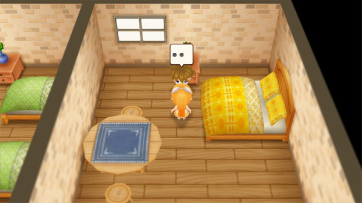
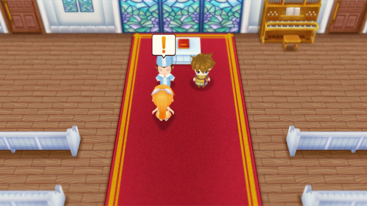

Cliff y Ran


Evento Rival Negro
| Requisitos |
|---|
- Sube al segundo piso de la posada.
- 19:00 a 21:00
- No debe ser Sabado
- Cualquier clima
- Primavera 6 a primavera 30
- Cliff tiene un color de corazón negro.
- Ran tiene un color de corazón negro.
|
 |
Evento Rival Azul
| Requisitos |
|---|
- Entra a la iglesia
- 11:00 am a 4:00 pm
- No debe ser Sabado
- Cualquier clima
- Primavera 8 al Verano 30
- Cliff tiene un color de corazón azul, morado o negro.
- Ran tiene un color de corazón azul, morado o negro.
- Has visto el evento del rival negro.
- Es antes del otoño 1 del año 1.
|
 |
Este evento no se activará durante la temporada de otoño. Una vez que Cliff consigue el trabajo en la bodega , ya no visita la Iglesia durante el evento rival. Si no consigue el trabajo en la bodega, este evento podría (¿quizás?) desencadenarse entre el invierno 1 y el invierno 29, pero no estoy seguro de si eso es cierto todavía.